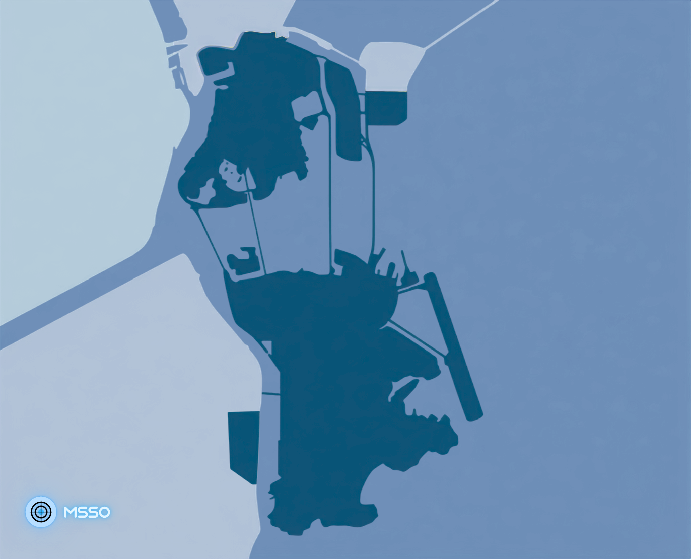

澳門民間氣象台 MSSO
☰
首頁
澳門天氣
▼
綜合氣象實況
(NEW)暑熱監測
空氣質量實況
電腦模式天氣實況及預報
降雨預報
熱帶氣旋
▼
熱帶氣旋資訊
熱帶氣旋襲澳追蹤
熱帶氣旋計算工具
熱帶氣旋路徑GIS地圖
天文
▼
天文
氣候
▼
澳門氣候
(NEW)二十四節氣專頁
地球物理
▼
(NEW)地震
(NEW)海嘯
(NEW)授時
其他
▼
關於我們
版本記錄
即時空氣質量水平 (載入中...)
各區空氣質素極值概覽
氣象與空氣質量數據
綜合空氣質量指數 (AQI)
PM 2.5 (μg/m³)
PM 10 (μg/m³)
NO 2 (μg/m³)
O 3 (μg/m³)
SO 2 (μg/m³)
CO (mg/m³)

良好
普通
不良
非常不良
嚴重
有害
監測站類型
位置
水平
指數
正在載入空氣質素數據...
天氣實況
熱帶氣旋
天氣預報
空氣質素